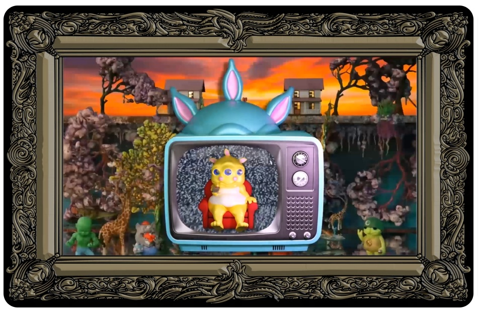

Project type
Ethereum NFT / digital collectible project connected to Ron English's Delusionville universe.
A 2022 limited-edition NFT drop tied to Ron English's Delusionville mythology. This project page documents Potato Rabbit, Scrap Ard, Kursed Zephyr, and Poultry Rex as individual catalogue records, each with a single Work ID assigned to the named NFT rather than to every edition copy.

Ethereum NFT / digital collectible project connected to Ron English's Delusionville universe.
Each listed NFT opens to an individual metadata page. The main project index shows the image and title only.
Marketplace records identify the works with edition-style numbering such as #1/10, #3/10, #7/10, and #10/10. The catalogue pages assign one Work ID to each named NFT work.
Brain Heart is documented as a collector airdrop connected to The Grand Delusion Part 1, preserved here with the main project rather than as a separate top-level NFT collection.